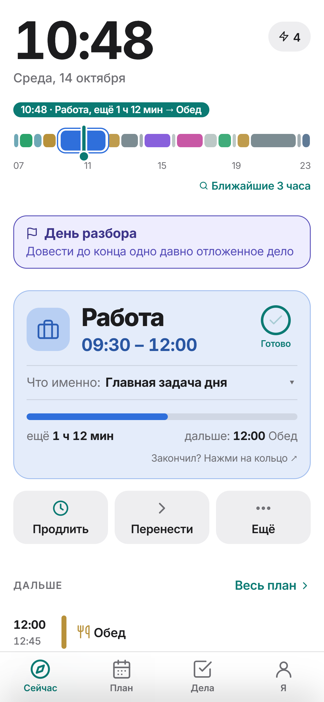
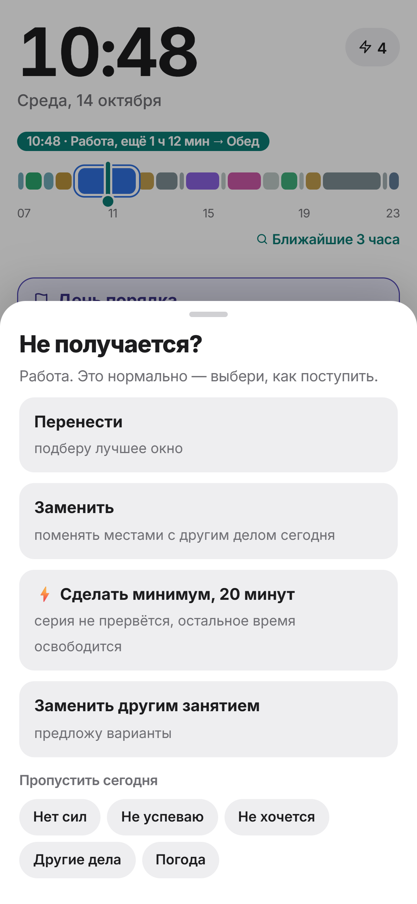
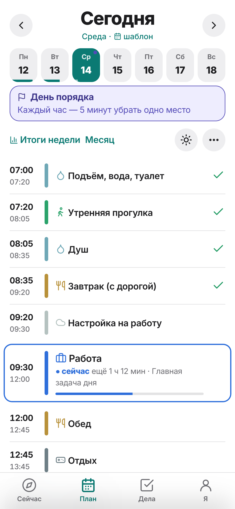
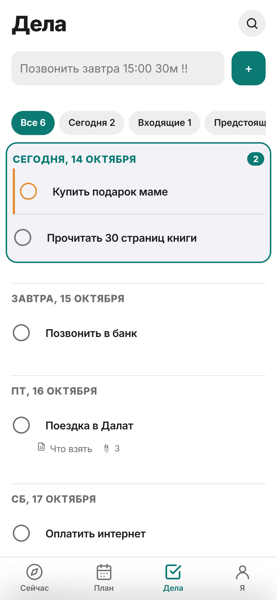
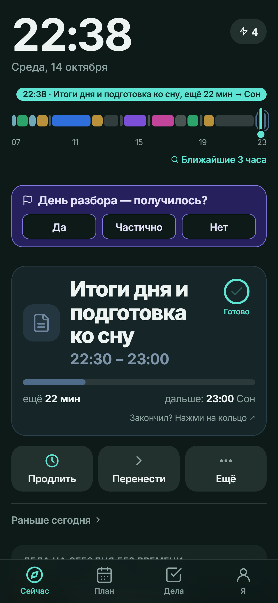
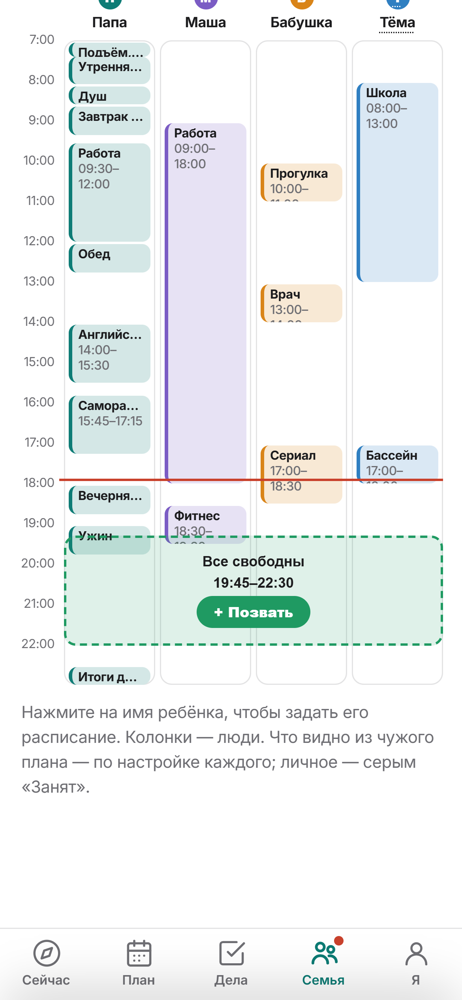

Ритм — навигатор дня
Открываешь — и сразу видно, что делать сейчас, сколько на это осталось и что дальше. Одна кнопка «Готово».

Не получается? «Не могу»
Ритм предложит, чем заменить или куда перенести, не ломая остальной день. «Заменить», «Продлить», перетаскивание и свайпы — план меняется в пару касаний.

План дня и недели
Три вопроса при первом запуске — и неделя собрана: подъём, работа, спорт, отдых, сон. Шаблоны недели легко поправить.

Дела и заметки
Быстрый ввод обычными словами: «позвонить завтра в 15:00». Сроки, повторы, папки, теги, заметки с галочками и голосовые записи. Перенос из TickTick и Todoist.

Будильники, которые звонят
До пяти напоминаний у занятия: уведомление или настоящий будильник, даже при заблокированном экране. Виджеты на рабочем столе и спокойная ночная тема.

Ритм Семья
Общие дела («купить молоко → Маше»), день семьи и окно «Все свободны», расписание детей, общие списки покупок. Каждый сам решает, что из своего дня показывать. 14 дней бесплатно.

Посмотреть за минуту
Вопросы
Ритм бесплатный?
Да. Всё, кроме «Семьи», бесплатно и без рекламы. «Семья» — платная подписка на всю семью, первые 14 дней бесплатно.
Где хранятся мои данные?
На телефоне. Копия в облаке — только если вы сами войдёте через Google. Подробно — в политике конфиденциальности.
Есть ли Ритм для iPhone?
Пока только Android (Android 7 и новее).
На каких языках?
Русский, английский, испанский, португальский, немецкий, французский, итальянский, нидерландский, польский, турецкий, японский, корейский и китайский.